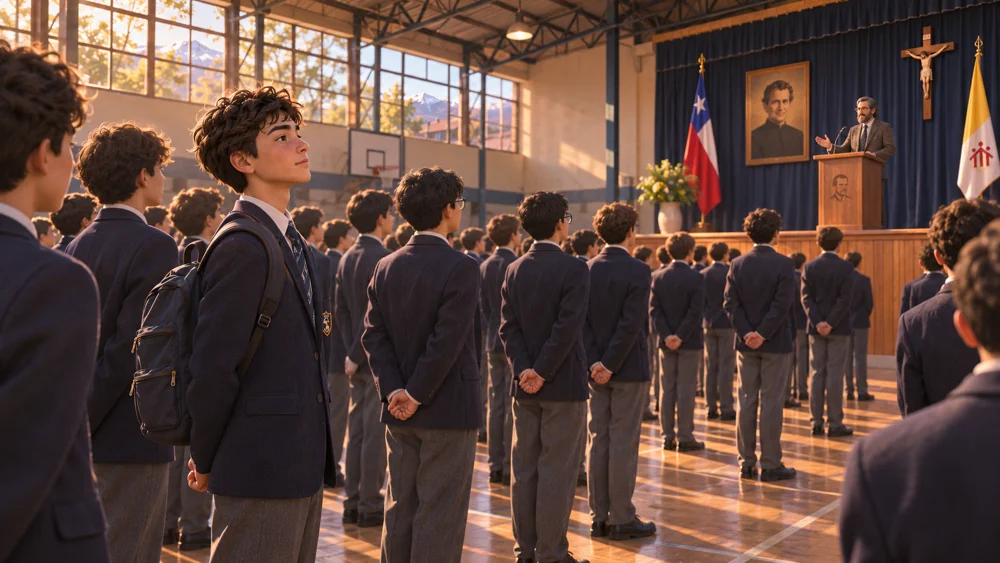
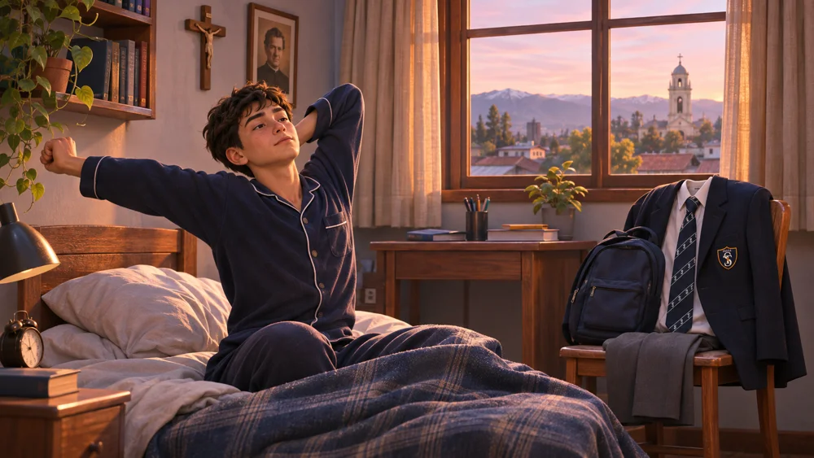
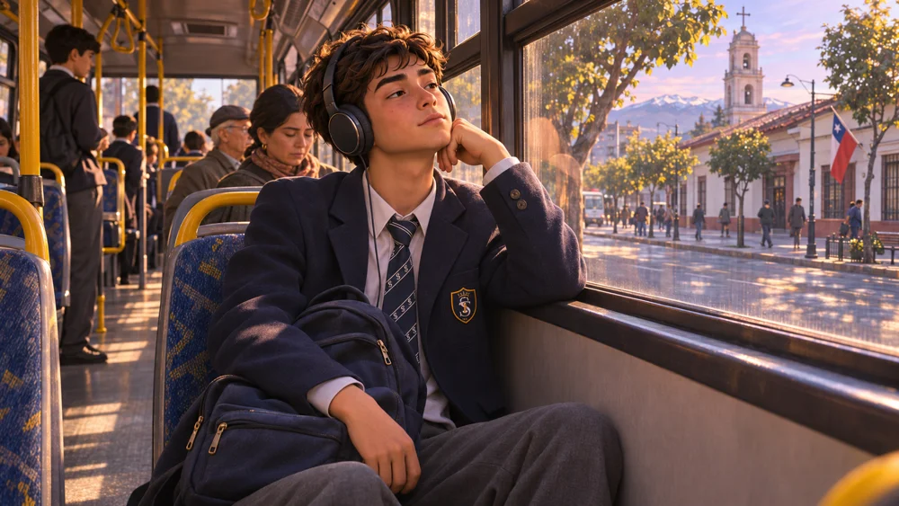
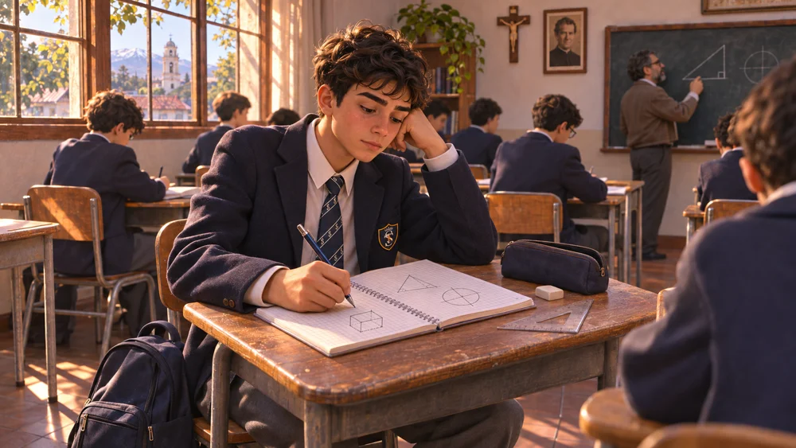
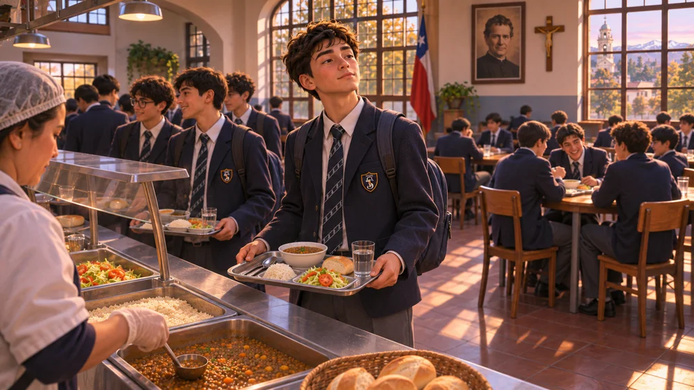
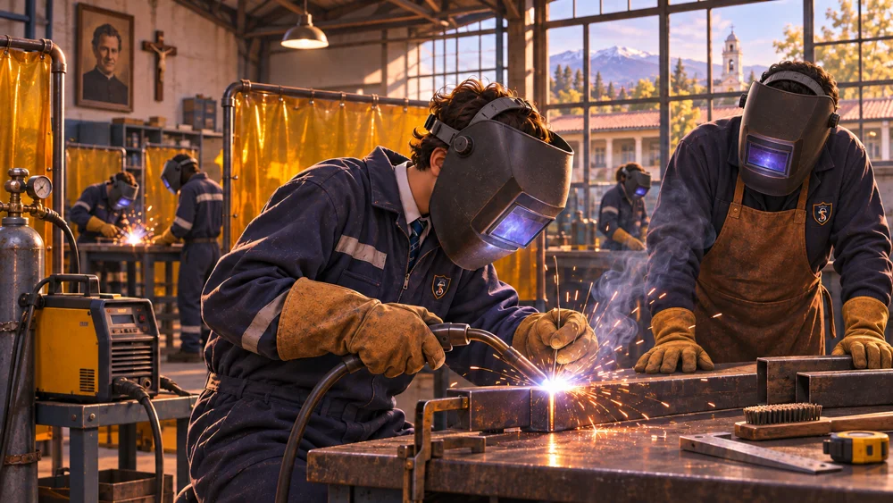
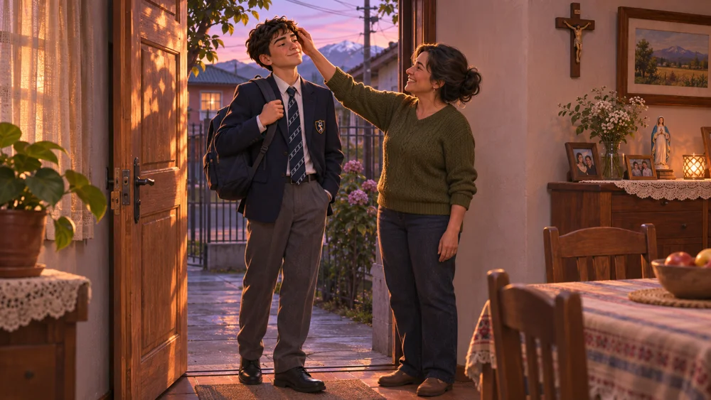
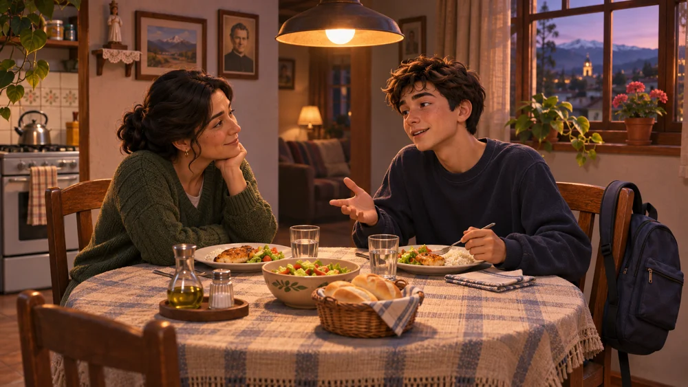

TÉCNICO PROFESIONAL: 2 SUR 1147 – FONOS (71) 2615416 · 2615410
BÁSICA y LICEO: 11 ORIENTE 1751 – FONOS (71) 2615454 · 2615457
www.salesianostalca.cl – cest@salesianostalca.cl · TALCA - REGIÓN DEL MAULE - CHILE
Lengua y Literatura · 3.º medio · Prof. Francisco Javier Núñez Valenzuela
Mi día en imágenes y voz
Guía del proyecto · Planos, libreto, edición y presentación
Nombre 1
RUT
Nombre 2
RUT
Profesor
Francisco Javier Núñez Valenzuela
Curso
N° Lista
Asignatura
Lengua y Literatura
Guía N°
Proyecto
Revisado
Semestre
II
Fecha
Puntaje
24 puntos
Objetivo
Planificar, grabar, editar y presentar en pareja un relato audiovisual de un día, relacionando imágenes, planos, ángulos y una voz interior que comunique pensamientos, emociones y reflexiones sobre la experiencia.
Habilidades
Seleccionar, planificar, producir, revisar y explicar decisiones audiovisuales.
INSTRUCCIONES GENERALES
Trabajen en parejas. Pueden contar el día de uno o de ambos integrantes y aparecer uno o ambos en pantalla.
Graben primero las imágenes y después la narración en voz en off.
Planifiquen en Canva qué se verá, qué dirán, el plano, el ángulo y los segundos de cada toma.
Entreguen el libreto visual y un video de hasta 5 minutos, incluidos título y créditos.

Imagen del video modelo · recreación ilustrada con IA.
¿Qué aprenderemos y qué vamos a crear?
OBJETIVO DEL PROYECTO
Planificar, grabar, editar y presentar en pareja un relato audiovisual de un día, relacionando imágenes, planos, ángulos y una voz interior que comunique pensamientos, emociones y reflexiones sobre la experiencia.
Objetivos de Aprendizaje del currículo
OA 6 · Producción. Producir textos orales, escritos y audiovisuales con unidad de sentido, adecuados al propósito, al género y a la audiencia; planificar, elaborar, editar y revisar el producto.
OA 7 · Recursos del discurso. Usar palabras, imágenes, sonidos y gestos considerando cómo se combinan para construir el sentido y cómo nos presentamos ante la audiencia.
Síntesis de los OA de Lengua y Literatura, 3.º medio, formación general. Fuente: Currículum Nacional, Mineduc: OA 6 y OA 7.
Nuestra pregunta
¿Cómo contar un día completo seleccionando imágenes y palabras que permitan comprender nuestra experiencia?
La ruta del proyecto
Etapa
Trabajo de la pareja
Avance que muestran
1. Planos y ángulos
Observar el modelo y justificar qué muestra cada encuadre.
Decisiones de cámara explicadas.
2. Libreto en Canva
Ordenar los momentos, dibujar viñetas y cronometrar la voz.
Libreto con tiempos revisados.
3. Grabación y edición
Grabar, recortar, añadir voz y música, y comprobar el archivo.
Video y libreto final.
4. Presentación
Proyectar y explicar una decisión; escuchar comentarios.
Explicación y reflexión final.
El video puede durar menos de cinco minutos si cuenta el día con claridad. No rellenen con imágenes repetidas para llegar al máximo. La voz suena sobre las imágenes: ese tiempo no se suma dos veces.
Conceptos y definiciones clave
Lean el glosario en pareja. Subrayen dos conceptos que todavía necesiten aclarar y busquen un ejemplo en el video modelo.
Concepto
Qué significa y cómo se aplica
Relato audiovisual
Historia construida con imágenes, palabras, sonidos y edición. Ejemplo: contar la llegada al colegio con imágenes del viaje y una voz que las conecta.
Tema, mensaje y propósito
Tema: el asunto, como un día escolar. Mensaje: la idea que construimos, como el esfuerzo de una jornada. Propósito: lo que buscamos provocar en quienes miran.
Audiencia
Personas a quienes se dirige el video. Nuestro curso conoce el colegio; aun así debemos explicar las transiciones para que entienda el recorrido.
Encuadre, plano y ángulo
Encuadre: lo que queda dentro de la imagen. Plano: cuánto del sujeto o lugar vemos. Ángulo: desde dónde mira la cámara.
Toma y escena
Toma: grabación continua. Escena: acción situada en un lugar y momento, que puede construirse con varias tomas.
Libreto y storyboard
El libreto organiza imagen, voz y tiempo. El storyboard o guion visual lo representa con viñetas: un dibujo por toma planificada.
Voz en off
Narración que se escucha sobre las imágenes, grabada después de filmarlas. Agrega información o reflexión; no necesita describir cada gesto.
Continuidad
Relación entre tomas que permite seguir una acción. Revisen personas, ropa, objetos, lugar y orden para evitar saltos confusos.
Edición y corte
Editar es seleccionar, recortar y ordenar el material. Un corte une dos tomas; una transición debe ayudar a entender el cambio.
Duración y sincronización
Duración: segundos de una toma. Sincronizar: hacer coincidir imagen y sonido. Lean la voz con cronómetro para comprobar si cabe.
Comprueben: si acercan la cámara al rostro sin cambiar su altura, ¿cambia el plano, el ángulo o ambos? Respondan en dos líneas y expliquen.
Planos: elegir cuánto mostrar
Un mismo momento puede contarse con distintos tamaños de plano. Elijan según la información que necesiten comunicar.
Ilustración didáctica con IA, reutilizada de la clase de planos.
Plano
Qué muestra
Ejemplo para su día
General
Persona y entorno amplio.
El paradero o la entrada al colegio.
Entero
Persona de pies a cabeza.
Caminar con la mochila o celebrar un gol.
Medio
Aproximadamente desde la cintura.
Conversar al cenar o preparar materiales.
Primer plano
Rostro y expresiones.
Cansancio o alegría al terminar el día.
Detalle
Una parte pequeña o un objeto.
Manos, corbata, cuaderno o pelota.
Tu tarea: en pareja, elijan dos planos para una misma acción. Escriban qué aporta cada uno; usen dos líneas.
Ángulos: elegir desde dónde mirar
El ángulo cambia nuestra mirada sobre una acción. Su efecto depende del contexto: no todos los picados comunican lo mismo.
Ilustración didáctica con IA, reutilizada de la clase de planos.
Ángulo
Ubicación de la cámara
Uso posible
Normal
A la altura del sujeto.
Mostrar una conversación de forma directa.
Picado
Desde arriba hacia abajo.
Mostrar cómo se distribuyen personas u objetos.
Contrapicado
Desde abajo hacia arriba.
Destacar un movimiento o la altura de un lugar.
Cenital
Vertical desde arriba.
Mostrar manos trabajando sobre una mesa.
Tu tarea: elijan un ángulo para mostrar sus materiales sobre una mesa. Expliquen qué permitiría ver y qué dejaría fuera. Respondan en dos líneas.
Estructura: un día contado en momentos
Seleccionen momentos desde que comienza el día hasta que termina. No necesitan grabar cada minuto: los cortes y la voz pueden conectar acciones que ocurrieron separadas.
Parte
Momentos que pueden incluir
Lo que debe entender el público
Inicio
• Despertar y levantarse. • Aseo y uniforme. • Preparar la mochila. • Salir y viajar.
Quién vive la experiencia y cómo comienza su día.
Desarrollo
• Llegada y buenos días. • Clases y actividades. • Recreos y juegos. • Almuerzo y amistades. • Taller u otra responsabilidad.
Cómo avanza la jornada y qué momentos son importantes para ustedes.
Cierre
• Terminar y guardar materiales. • Viaje de regreso. • Llegar y saludar. • Cena, descanso o reflexión.
Cómo termina el día y qué idea quieren dejar.
Distribución orientativa del máximo de 5 minutos
Parte
Tiempo
Inicio, incluido título
60 segundos
Desarrollo
180 segundos
Cierre, incluidos créditos
60 segundos
Total máximo
300 segundos = 5 minutos
Estos tiempos son una propuesta, no una obligación. El modelo dura exactamente cinco minutos y alterna 48 tomas de 4 a 10 segundos. Organicen su propio relato y ajusten los segundos al contenido y a la lectura real de la voz.
Acuerdo de pareja: ¿qué idea sobre nuestro día queremos comunicar? Escriban una frase.
Viñetas · Propuesta de voz interior · 1 a 6
Imágenes del modelo con una voz nueva propuesta: estas frases no son su audio actual. Un hilo une la expectativa de preguntar, la dificultad y la reflexión final. Ajusten los 10 segundos de ensayo mediante una lectura real.
01. Despertar

Imagen: Sentarse en la cama. Plano: Medio · Ángulo: Normal. Voz: «¿Y si hoy me atrevo a preguntar? Parece poco, pero llevo días prometiéndomelo.» Tiempo de ensayo: 10 s; ajusten al leer.
02. Salir
Imagen: Esperar con la mochila. Plano: Medio · Ángulo: Normal. Voz: «Siempre reviso la mochila dos veces. Ojalá fuera tan fácil asegurarme de estar listo por dentro.» Tiempo de ensayo: 10 s; ajusten al leer.
03. Viajar

Imagen: Mirar por la ventana. Plano: Medio · Ángulo: Normal. Voz: «La ventana fría… la prueba, ¿era hoy? Ese olor a pan… no pasarme del paradero.» Tiempo de ensayo: 10 s; ajusten al leer.
04. Llegar
Imagen: Escuchar el buenos días. Plano: General · Ángulo: Picado suave. Voz: «Escucho hablar de ayudar. Me acuerdo de quien ayer me explicó sin apurarse.» Tiempo de ensayo: 10 s; ajusten al leer.
05. Recreo
Imagen: Jugar ping pong. Plano: General · Ángulo: Normal. Voz: «Acá me río de mis errores. ¿Por qué en la sala me cuesta tanto hacer lo mismo?» Tiempo de ensayo: 10 s; ajusten al leer.
06. Matemática

Imagen: Escribir en el cuaderno. Plano: Medio · Ángulo: Normal. Voz: «Borré otra vez. ¿Y si pregunto? Seguir callado no me está ayudando.» Tiempo de ensayo: 10 s; ajusten al leer.
Imágenes recreadas con IA. Las viñetas proponen una toma; identifiquen los cambios reales del video en el análisis siguiente.
Viñetas · Propuesta de voz interior · 7 a 12
Imágenes del modelo con una voz nueva propuesta: estas frases no son su audio actual. Un hilo une la expectativa de preguntar, la dificultad y la reflexión final. Ajusten los 10 segundos de ensayo mediante una lectura real.
07. Almorzar

Imagen: Avanzar con la bandeja. Plano: Medio · Ángulo: Normal. Voz: «Pienso en llegar a la cancha. A veces vivo tan apurado que ni noto quién está al lado.» Tiempo de ensayo: 10 s; ajusten al leer.
08. Jugar
Imagen: Patear al arco. Plano: General · Ángulo: Normal. Voz: «¡Gol! Por unos segundos se me olvida todo. Después recuerdo el pase: solo no habría podido.» Tiempo de ensayo: 10 s; ajusten al leer.
09. Taller

Imagen: Trabajar con protección. Plano: Medio · Ángulo: Normal lateral. Voz: «La pieza no sale a la primera. Respiro. Quizás aprender sea insistir sin fingir que ya sé.» Tiempo de ensayo: 10 s; ajusten al leer.
10. Regresar
Imagen: Esperar la micro. Plano: General · Ángulo: Normal. Voz: «Esta mañana quería atreverme. Al final pregunté. Qué raro: la duda pesaba más que la mochila.» Tiempo de ensayo: 10 s; ajusten al leer.
11. Llegar a casa

Imagen: Saludar a la mamá. Plano: Medio · Ángulo: Normal. Voz: «Me pregunta cómo estuvo el día. Casi digo «bien», como siempre. Hoy quiero contarle algo más.» Tiempo de ensayo: 10 s; ajusten al leer.
12. Terminar

Imagen: Compartir la cena. Plano: Medio · Ángulo: Normal. Voz: «El día parecía igual a todos. Yo no termino igual: mañana quisiera escuchar a alguien como hoy me escucharon.» Tiempo de ensayo: 10 s; ajusten al leer.
Imágenes recreadas con IA. Las viñetas proponen una toma; identifiquen los cambios reales del video en el análisis siguiente.
El video modelo · Planos y ángulos observables
El modelo dura 5:00 e incluye 48 tomas de distintas duraciones. Los rótulos identifican plano, ángulo y segundos. Pausen y comprueben cada clasificación con pistas de la imagen.
Tiempo exacto
Plano
Ángulo y pista visible
00:00–00:04
Primerísimo primer plano
Normal: ojos y cejas ocupan el encuadre.
00:27–00:31
Detalle de mochila y manos
Cenital: la cámara mira verticalmente hacia la mesa.
01:04–01:09
Entero, caminata
Normal: vemos el cuerpo completo y el entorno.
01:16–01:21
Entero, llegada
Contrapicado: cámara baja orientada hacia arriba.
01:44–01:50
General, ping pong
Picado: vemos jugadores y mesa desde arriba, en diagonal.
02:10–02:18
Medio, Matemática
Inclinado: horizonte y líneas del aula aparecen oblicuos.
02:18–02:24
Medio, pregunta
Normal: rostro y parte del cuerpo del estudiante que levanta la mano.
04:44–04:48
Detalle de la cena
Cenital: platos y manos vistos verticalmente desde arriba.
La voz interior: al despertar quiere atreverse a preguntar; en Matemática enfrenta esa duda; en la cena comprende lo que aprendió. La voz agrega pensamientos a la acción. Las doce viñetas anteriores ofrecen otras posibilidades de escritura, no una transcripción literal.
Ritmo: comparen una toma de 4 segundos con otra de 10. Expliquen qué necesita tiempo para comprenderse. No confundan duración de una toma con duración de una escena completa.
La voz interior · Pensar mientras vivimos
La imagen muestra lo que ocurre. La voz puede abrir lo que el personaje piensa y siente: una duda, un recuerdo, una contradicción o algo que comprende al final. La voz en off es el recurso sonoro; el monólogo interior es una forma de construir su contenido.
Recurso
Cómo lo trabajaremos
Ejemplo propio sobre un mismo viaje
Narración de acciones
Cuenta lo que sucede y conecta momentos.
«Subo a la micro y miro por la ventana».
Introspección
Examinar lo que uno siente, piensa o desea y preguntarse por qué.
«¿Por qué me preocupa tanto equivocarme hoy?».
Monólogo interior
Representa el pensamiento del personaje, sin que lo diga a otros. Puede conservar frases completas y un hilo reconocible.
«Ojalá hoy me atreva a preguntar. Ayer me quedé callado y volví a casa con la misma duda».
Corriente de la conciencia
Busca imitar el fluir de la mente mediante asociaciones, sensaciones, recuerdos y saltos de atención; puede fragmentar las frases.
«La ventana fría… la prueba, ¿era hoy? Ese olor a pan, la cocina de mi casa… no pasarme del paradero».
Reflexión
Relaciona la experiencia con una idea, un aprendizaje o una decisión.
«Me doy cuenta de que preguntar también es una manera de avanzar».
Monólogo interior y corriente de la conciencia son recursos próximos; sus límites varían entre autores y estudios. Aquí los contrastamos para ensayar una voz más ordenada o más asociativa. No basta quitar la puntuación para crear una corriente de la conciencia.
Para el video: construyan un monólogo interior como hilo del día. Si lo desean, incorporen un fragmento breve de corriente de la conciencia. Mantengan comprensible el recorrido y dejen pausas para mirar las imágenes.
En pareja, en tres minutos: ¿qué revela el monólogo que la imagen del viaje no puede mostrar por sí sola? Respondan con una frase del ejemplo.
Los ejemplos son creaciones didácticas CEST. Pueden escribir desde una voz ficcional; no tienen que revelar experiencias íntimas ni asuntos familiares.
Taller de escritura · De la acción al pensamiento
Antes de abrir Canva, trabajen diez minutos en pareja. Elijan tres momentos del día: uno al comienzo, uno de tensión, alegría o dificultad y otro al terminar. Escriban primero lo visible y después lo que la voz puede aportar.
Momento
Preguntas para explorar la voz interior
Inicio · Expectativa
¿Qué espero de hoy? ¿Qué me inquieta o me entusiasma? ¿Qué pienso pero no digo?
Desarrollo · Contraste
¿Qué recuerdo aparece? ¿Qué quiero hacer y qué hago en realidad? ¿Qué cambió mi ánimo y por qué?
Cierre · Comprensión
¿Qué entiendo ahora que al despertar no entendía? ¿Qué valoro? ¿Qué pregunta queda abierta o qué haré mañana?
Ejemplo de reescritura, no transcripción del video
Imagen: estudiante resolviendo un ejercicio. Voz descriptiva: «Ahora tengo Matemática». Monólogo: «Otra vez borré lo mismo. Todos parecen avanzar. ¿Y si pregunto? Me da vergüenza, pero seguir callado no me está ayudando».
Decisión audiovisual: alternar el cuaderno con el rostro. Reservar aproximadamente 15 segundos, incluidas las pausas, y comprobar la duración mediante una lectura real.
1. Inicio. Imagen que grabaremos y pensamiento que la voz revelará:
2. Desarrollo. Imagen que grabaremos y duda, recuerdo o contradicción:
3. Cierre. Imagen que grabaremos y reflexión o pregunta final:
Revisión en pareja, cinco minutos: subrayen lo que la voz agrega a la imagen. Si solo repite lo visible, reescriban una frase. Eviten frases genéricas como «fue un día lindo»: vinculen la reflexión con un momento concreto.
Clase de libreto · Planificamos en Canva
META DE LA CLASE
Crear en pareja un libreto visual con acciones, voz interior y tiempos comprobados.
Definan el relato. Elijan de quién será el día, qué momentos incluirán y qué quieren comunicar al curso.
Repartan el trabajo. Acuerden quién grabará, quién narrará y cómo compartirán edición y revisión. Ambos participan en las decisiones.
Creen el documento en Canva. Usen una presentación o documento con título, nombres y curso en la portada. Copien la plantilla de las páginas siguientes.
Construyan una viñeta por toma. Dibujen y escriban acción, plano, ángulo, duración, pensamiento o emoción y texto exacto de la voz. Una escena puede necesitar varias viñetas.
Completen el recorrido. Planifiquen al menos 4 planos diferentes de los 8 estudiados y 3 ángulos distintos, entre inicio, desarrollo y cierre. Dupliquen las viñetas si necesitan más tomas.
Cronometren y sumen. Lean en voz alta la narración de cada toma. Ajusten palabras o segundos; incluyan títulos y créditos. El total no puede superar 300 segundos.
Revisen con otra pareja. Comprueben orden, tiempos y tres momentos de voz interior: inicio, desarrollo y cierre. Corrijan una frase que solo repita lo visible.
Ejemplo de una toma
Plan listo para grabar
Imagen / bosquejo
Manos ajustando la corbata; dibujar manos y cuello, sin el cuerpo completo.
Plano / ángulo / tiempo
Detalle · Normal · 6 segundos.
Voz
«Me arreglo la corbata. Ojalá ordenar mis ideas fuera tan fácil».
Para qué sirve
La imagen muestra la preparación; la voz revela una inquietud.
Al cerrar: muestren el enlace de Canva con permiso de lectura para el profesor y el total de segundos. Guarden una copia en PDF.
Plantilla de libreto visual · Viñetas 1–4
Completen en pareja como borrador o copien la estructura en Canva. Cada viñeta representa una toma. Escriban el tiempo que ocupará en el video final.
VIÑETA 01
Bosquejo: dibujen lo que se verá
Acción o imagen:
Plano:
Ángulo:
Duración: s · Orden:
Voz interior: pensamiento, emoción o reflexión.
VIÑETA 02
Bosquejo: dibujen lo que se verá
Acción o imagen:
Plano:
Ángulo:
Duración: s · Orden:
Voz interior: pensamiento, emoción o reflexión.
VIÑETA 03
Bosquejo: dibujen lo que se verá
Acción o imagen:
Plano:
Ángulo:
Duración: s · Orden:
Voz interior: pensamiento, emoción o reflexión.
VIÑETA 04
Bosquejo: dibujen lo que se verá
Acción o imagen:
Plano:
Ángulo:
Duración: s · Orden:
Voz interior: pensamiento, emoción o reflexión.
Subtotal de estas cuatro tomas: segundos. Dupliquen la plantilla si el relato necesita más tomas.
Plantilla de libreto visual · Viñetas 5–8
Completen en pareja como borrador o copien la estructura en Canva. Cada viñeta representa una toma. Escriban el tiempo que ocupará en el video final.
VIÑETA 05
Bosquejo: dibujen lo que se verá
Acción o imagen:
Plano:
Ángulo:
Duración: s · Orden:
Voz interior: pensamiento, emoción o reflexión.
VIÑETA 06
Bosquejo: dibujen lo que se verá
Acción o imagen:
Plano:
Ángulo:
Duración: s · Orden:
Voz interior: pensamiento, emoción o reflexión.
VIÑETA 07
Bosquejo: dibujen lo que se verá
Acción o imagen:
Plano:
Ángulo:
Duración: s · Orden:
Voz interior: pensamiento, emoción o reflexión.
VIÑETA 08
Bosquejo: dibujen lo que se verá
Acción o imagen:
Plano:
Ángulo:
Duración: s · Orden:
Voz interior: pensamiento, emoción o reflexión.
Subtotal de estas cuatro tomas: segundos. Dupliquen la plantilla si el relato necesita más tomas.
Plantilla de libreto visual · Viñetas 9–12
Completen en pareja como borrador o copien la estructura en Canva. Cada viñeta representa una toma. Escriban el tiempo que ocupará en el video final.
VIÑETA 09
Bosquejo: dibujen lo que se verá
Acción o imagen:
Plano:
Ángulo:
Duración: s · Orden:
Voz interior: pensamiento, emoción o reflexión.
VIÑETA 10
Bosquejo: dibujen lo que se verá
Acción o imagen:
Plano:
Ángulo:
Duración: s · Orden:
Voz interior: pensamiento, emoción o reflexión.
VIÑETA 11
Bosquejo: dibujen lo que se verá
Acción o imagen:
Plano:
Ángulo:
Duración: s · Orden:
Voz interior: pensamiento, emoción o reflexión.
VIÑETA 12
Bosquejo: dibujen lo que se verá
Acción o imagen:
Plano:
Ángulo:
Duración: s · Orden:
Voz interior: pensamiento, emoción o reflexión.
Subtotal de estas cuatro tomas: segundos. Dupliquen la plantilla si el relato necesita más tomas.
Antes de editar · Grabamos las imágenes
ORDEN DE TRABAJO
Primero graben las imágenes del libreto. Después graben la voz y editen. No tienen que hablar frente a la cámara durante cada toma.
Revisen el lugar, la luz y el encuadre. Graben en horizontal y mantengan esa orientación durante todo el video.
Apoyen el dispositivo o sosténganlo firme. Dejen unos segundos antes y después de la acción para poder recortar.
Graben al menos 4 planos diferentes de los 8 estudiados y 3 ángulos distintos que ayuden a contar el día. Repetir un plano no suma un tipo nuevo.
Comprueben la continuidad: ropa, mochila, manos y objetos deben permitir seguir la acción entre tomas.
Revisen cada grabación. Si la persona queda cortada, sale accidentalmente del encuadre o la imagen no se entiende, repitan la toma.
Guarden los archivos por orden, como 01_despertar y 02_mochila. Conserven los originales y una copia de respaldo.
CUIDADOS DURANTE LA GRABACIÓN
Pidan permiso antes de mostrar a otras personas. No graben dentro de baños ni muestren direcciones o datos privados.
Graben únicamente en momentos y lugares autorizados. El uso del dispositivo para esta tarea requiere la autorización del profesor.
En talleres, respeten la supervisión y las protecciones habituales. La grabación nunca interrumpe una maniobra ni exige retirar protección.
Control de pareja: ¿qué toma necesitamos repetir y qué debemos cambiar? Anoten una decisión concreta.
Clase de edición · Imagen, voz y música
META DE LA CLASE
Construir un video comprensible, con imágenes ordenadas y voz clara, y comprobar el archivo final antes de entregarlo.
Importen y ordenen. Reúnan las tomas en el editor y sigan el libreto. Recorten silencios visuales, errores y repeticiones.
Graben la narración. Busquen un lugar tranquilo, hablen con ritmo natural y escuchen una prueba. Si corren o no se entiende, vuelvan a grabar.
Hagan coincidir imagen y voz. Ubiquen cada frase sobre la toma correspondiente. Si la voz no cabe, acorten el texto o ajusten la duración sin superar cinco minutos.
Añadan música. Usen una pista autorizada o libre de uso y bájenle el volumen para que la voz se entienda. Si no disponen de música adecuada, pueden omitirla.
Comprueben los cortes. Revisen que nadie desaparezca por un cambio confuso, que una acción no quede incompleta y que el final no corte la última frase.
Exporten y reproduzcan. Guarden en MP4, preferentemente 720p o 1080p. Vean el archivo completo con sonido, no solo la vista del editor.
Entreguen. Envíen el video y el enlace o PDF del libreto por el medio indicado por el profesor. Si comparten un enlace, comprueben su permiso de lectura.
Cálculo del archivo final
Segundos
Inicio, con título
Desarrollo
Cierre, con créditos
Total (máximo 300 s)
□ Se entiende el día completo y el orden de sus momentos.
□ La voz aporta pensamientos en inicio, desarrollo y cierre; se escucha con claridad.
□ Hay al menos 4 de los 8 planos y 3 ángulos distintos; aportan información.
□ El MP4 se reproduce completo y dura cinco minutos o menos.
Fecha de entrega: · Medio de entrega:
Presentación y revisión con el curso
ANTES DE LA PROYECCIÓN
En pareja, preparen una explicación oral de aproximadamente un minuto. Ambos deben intervenir. La explicación se realiza aparte del video.
Presenten el título y de quién es el día que muestran.
Expliquen una elección de plano o ángulo y qué permite comprender.
Citen un pensamiento de su voz interior y expliquen qué agrega a la imagen. Mencionen una mejora de su libreto o edición.
Preparamos nuestra explicación
Nuestro video cuenta:
En el momento usamos el plano o ángulo porque:
Una mejora que hicimos al revisar fue:
Mientras observamos otros videos
Anoten un logro y una sugerencia sobre un video. Apóyense en un momento concreto y comenten con respeto, sin juzgar la vida ni las condiciones de otras personas.
«En la escena de ______, el plano ______ ayuda a comprender ______. Una mejora posible sería ______ porque ______».
Después de presentar
¿Qué haríamos de otra manera y cómo mejoraría el relato? Escriban dos líneas.
Rúbrica · Proceso, video y presentación
La evaluación reúne evidencias de todas las clases. En cada criterio marquen un nivel: 4, 3, 2 o 1 punto. Se asignan 0 puntos cuando no hay evidencia del criterio. Máximo: 24 puntos.
Criterio
4 · Completo
3 · Logrado
2 · Parcial
1 · Inicial
Libreto visual en Canva
Todas las tomas tienen bosquejo, acción, plano, ángulo, voz y duración.
Falta un dato puntual; el plan permite grabar.
Varias tomas están incompletas y requieren aclaraciones.
Solo hay una lista o bosquejos mínimos.
Planificación del tiempo
Tiempos por toma completos, sumados y ajustados a la lectura de la voz; total ≤ 300 s.
Plan completo con un desajuste menor entre voz y tiempo.
Tiempos parciales o suma sin comprobar con la voz.
Solo indica una duración general.
Planos y ángulos
Al menos 4 de los 8 tipos de plano y 3 ángulos distintos aportan información al relato.
Usa 4 tipos de plano y 3 ángulos; una elección aporta poco al relato.
Usa menos de 4 tipos de plano o menos de 3 ángulos; variedad o intención parcial.
Predomina un solo encuadre sin intención reconocible.
Relato, voz y edición
Día coherente; voz interior en inicio, desarrollo y cierre; reflexión ligada a una escena; audio y cortes claros.
Voz interior presente; una reflexión poco desarrollada o un defecto menor de edición.
Predomina enumerar acciones; introspección aislada o dificultades de audio y edición.
Solo enumera acciones o el relato apenas se comprende.
Proceso y entrega
Ambos planifican y revisan; entregan libreto y video reproducible de hasta 5 min.
Una evidencia de proceso o entrega presenta una dificultad menor.
Participación o revisión parcial; falta uno de los productos.
Hay evidencia mínima del proceso o solo un archivo incompleto.
Presentación y revisión
Ambos explican una decisión con razón, una mejora y comentan con evidencia y respeto.
Un elemento de la explicación o comentario queda poco desarrollado.
Explican o comentan solo una parte de lo solicitado.
Participación mínima, sin explicar decisiones.
Puntaje: / 24 · Exigencia: 60 % · Nota:
El 60 % de 24 equivale a 14,4 puntos. Con puntajes enteros, 15 puntos alcanzan al menos el 60 %. La conversión y el redondeo se aplican según el reglamento del establecimiento.
Logro principal y mejora para una próxima producción: